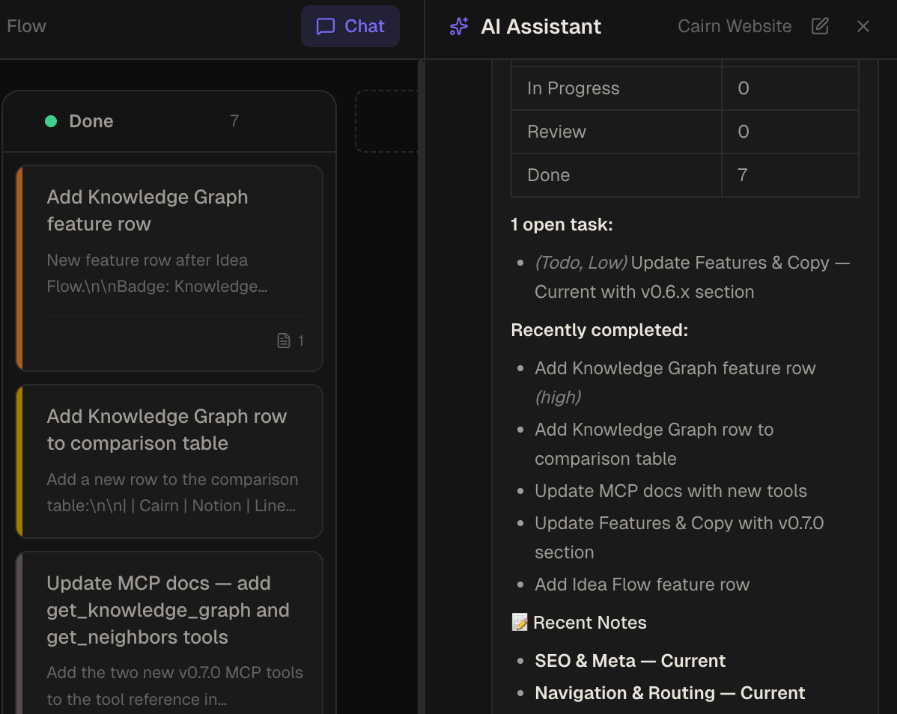
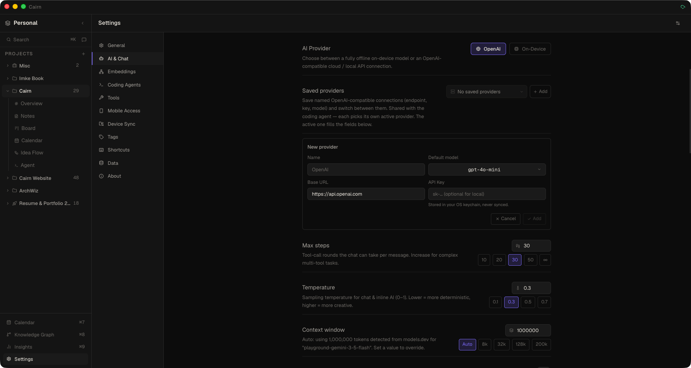

AI Chat
A persistent side panel that gives your AI model direct access to your workspace. Read notes, create tasks, move cards, generate PRDs — all through natural conversation.
Opening the chat panel
Press ⌘/ on macOS or Ctrl+/ on Windows and Linux. The chat panel slides open on the right side of the window. It stays open across navigation — switching between Notes and Board views doesn't close it.
How the agentic loop works
When you send a message, Cairn sends your message and the conversation history to your configured AI endpoint. The model may respond with plain text, or it may issue tool calls — requests to perform actions inside your workspace.
Cairn executes each tool call, feeds the result back to the model, and repeats until the model produces a final text response with no pending tool calls. This is the agentic loop: the model can chain multiple actions to complete complex requests without needing you to prompt it at each step.
Example: "Move all urgent tasks to In Progress" — the model calls search_tasks to find urgent cards, then calls update_tasks to move them, then responds with a summary.

Live tool call activity feed
Every tool call is shown in real time in the chat panel as it executes. You see:
- The tool name and parameters being passed
- A live spinner while the call is running
- A success or error indicator when it completes
This makes the AI's behaviour transparent — you always know what it did and why.
Streaming responses
The AI streams its reply as it's generated — you see the response building in real time rather than waiting for the full reply. Settled replies show a small stats line (time to first token, tokens per second, output tokens), and a Report an issue flag under each reply opens a prefilled GitHub issue in your browser (version, OS, model and settings; the reply text and your connected tools are opt-in) — you review it before submitting, and Cairn posts nothing itself.
Queue messages while it works
The composer stays active while a reply is in progress. Sending adds your message to a queue shown above the input; queued messages are sent automatically, in order, when the current reply finishes. Stopping cancels only the in-flight turn.
Attachments: images & PDFs
The chat composer accepts image and PDF attachments alongside text. The attach button adapts to the selected model: models known (via models.dev) to accept images keep the image option, models that accept PDFs receive the raw bytes losslessly, and models that only take images get a PDF rasterized (up to 8 pages) into image parts so the file still arrives. The attach button is hidden for models known not to accept any attachments, and everything falls back gracefully offline. The coding agent's input accepts the same attachments — images and PDFs are staged, serialized, and sent with the prompt through the agent loop.
Thread history
A History button in the chat header lists your recent threads for the project, each titled from its first message. Select any thread to resume it. Threads can be renamed (a renamed title sticks), deleted individually, or cleared in bulk. Deleting the active thread starts a fresh one automatically, and a chat with a reply still running can't be deleted until you stop it. Chats with a running reply or unseen answers are pinned under Live chats in the sidebar, and a thread keeps running in the background if you switch away mid-turn. A session switcher in the sidebar and chat header lists your chat, coding and terminal sessions per project.
You can also ask the AI itself — "what did we decide about the export format last week?" — and it searches your earlier chats and coding sessions in the same workspace (search_sessions) and reads the exact messages (read_session). With embeddings turned on in Settings, matches are found by meaning, so a question can find a session that used different words; without embeddings it searches by words.
Each conversation is saved as a session log on disk, so it resumes exactly as you left it — including tool results, subagent traces and the model's reasoning — after restarts and updates. Images you paste are saved with the chat. Sessions you haven't used for 90 days are cleaned up. /archive-chat writes a short AI summary of the conversation to a project note (or the raw transcript if AI isn't configured).
Reasoning & thinking streams
Models that emit reasoning show their thought process in a collapsible thinking block that streams live and auto-collapses once the answer starts. For models that return a condensed reasoning summary (such as GPT-5.x), the panel shows that summary and expands to the full trace. A context-usage ring in the chat header breaks down your token budget — system prompt, tool definitions, tool outputs and conversation — and updates live. A Thinking pill next to the model picker (Auto, Off, Low, Medium, High, depending on what the model supports) steers reasoning effort; Auto sends no override, so the provider default applies. The same row is also in the provider/model popover.
Subagents
Turn on Subagents (Settings → AI → Chat, or the in-chat gear popover) to route a conversation through a dispatcher that delegates research and writing to focused child agents. It is cheaper on long, tool-heavy tasks and adds overhead on quick questions. Each running sub-agent appears as an inline block you can expand to "step into" — its instruction, streamed findings, and tool calls — and the trace persists in thread history.
Approvals
An approvals picker under the chat input controls what chat asks before running. The choice is saved and also applies to the note editor's inline AI.
- Safe (default) — asks before deleting notes, tasks, projects or Idea Flow items, and before connector calls.
- External approve — Cairn tools, deletes included, always run; only connector calls (MCP servers and HTTP services) ask.
- Allow everything — never asks.
Approval cards show what will run: for Cairn items the names rather than raw ids (e.g. "Moved task Fix the ring to Done") with a preview of text being written, and for connector tools the connector's logo and name, the action, and its arguments as a readable list. Chat has no filesystem or shell tools — those belong to the coding agent, which has its own permission picker and a sandboxed shell.
Personalities & writing style
Pick a personality next to the model selector to layer behavioural rules onto the system prompt — for example Caveman (short, plain words), Grill Me (stress-tests your plan with questions) or Junior to Senior (adversarial review). Browse and install more from the community catalog in Settings → AI → Chat → Chat personality, or write your own. With none selected the assistant behaves as normal.
Set up Settings → Writing Style (a guided session, or paste a style guide you already have) and chat and the coding agent can draft emails, replies, notes and PRDs in your voice using get_user_writing_style. If you ask for something in your voice and no style is configured, a chip under the tool call offers a one-click setup.
Side-by-side previews
The chat can morph between a right-docked sidebar and a full-workspace layout. Click a note, task, or reference in an assistant response and it opens in a preview pane next to the chat, with a header link to jump straight to the Board or Notes view. When the assistant calls an external tool, the result shows as a clickable chip that opens the underlying page (a Confluence doc, a pull request, a search hit) in your browser.
Saved AI providers
Save several named, OpenAI-compatible connections — each with its own name, base URL, API key, and default model — and switch the active one from a dropdown instead of retyping your endpoint every time. Add one for OpenAI, another for OpenRouter or Together, one for a local Ollama / LM Studio server, and flip between them in a click. You can switch the active provider right from the chat quick-settings popover while you're chatting.
- Shared with the coding agent — chat and the coding agent draw from the same provider list but keep independent active selections, so the agent can run a bigger model while chat stays on a cheaper one.
- Search & favourite models — every model dropdown has a search box at the top to filter long lists as you type, plus a star on each row. Favourites pin to the top of the list under a "Favourites" heading in every picker, are global (shared across all providers and both chat and the agent), and persist across restarts.
- Cost & logos in the picker — model rows pull live data from the models.dev catalog: the provider's logo sits next to the model name, a compact
$in/$outcost label shows the per-1M-token price (or "free"), and a warning triangle marks models known not to support tool calls. - Auto context window — model context size is detected from the models.dev catalog and applied automatically when you change models (cached for offline use).
- Credit balance — providers that expose a balance API (OpenRouter, DeepSeek, OpenAI, NeuralWatt, and any community provider that advertises a credits descriptor) show a small "credits left" badge under the model picker, refreshed at most once a minute.
- API protocol per provider — each saved provider declares whether it speaks Chat Completions (default), the OpenAI Responses API, or Anthropic Messages, so Claude models work directly with no proxy. Once a URL and model are set, the picker checks which of the three the provider offers for that model and labels each option; if your choice isn't available, one click switches to one that is. Reasoning summaries, image and PDF attachments work over Responses too. OpenCode providers are shown as "Automatic" because OpenCode serves each model over a single API.
- Max output tokens — a control in Settings → AI lets you cap each reply (handy to bound cost). Leave it on Auto (the default) and Cairn sends the model's own declared output limit, never more than a quarter of the context window, so it finishes naturally. Temperature also defaults to Auto (nothing sent), since many frontier reasoning models manage sampling themselves; the quick-settings popover offers 0.1–1.0 presets.
Community AI providers
A Browse Community button in Settings → AI → Chat (and Settings → AI → Coding Agents) installs ready-made provider presets from the cairn-community catalog with one click — you just enter your API key, which is stored in your OS keychain. Each preset ships an endpoint base URL and a default model, so there's no more copy-pasting gateway URLs. Installed providers join your shared provider list and show their brand logo in the switcher.

Local servers
Cairn doesn't bundle an LLM engine — bring your own. Run Ollama, LM Studio or llama.cpp yourself, then use Settings → AI → Chat → Local servers → Detect local servers: Cairn scans the usual ports (11434, 1234, 8080) and registers what it finds as saved providers. No API key is needed for localhost. Chat, the coding agent, one-shots and automations treat a local server like any other provider.
Provider API keys are stored encrypted in your operating system's keychain (macOS Keychain, Windows DPAPI, Linux libsecret) — never in plain text. The app only holds an opaque reference; the real key is decrypted in the background process at request time and never exposed to the window. The key field shows only "•••• stored — type to replace".
External tools in chat
Beyond the built-in workspace tools, chat can call external tools you connect — remote and local (stdio) MCP servers and any HTTP API, including OAuth-protected services. If an OAuth server isn't signed in when you send a message, a Sign in chip appears under the input so you can connect without leaving the conversation. Servers that offer resources or guidance for AI clients have them available too. Configure them in Settings → Extensions → Tools and attach them per-project. See External Tools for the full guide.
In-chat settings
A gear icon in the chat toolbar opens a compact popover to change the model, max tool-call steps, temperature, and subagents on the spot — no round-trip to Settings. A "More settings…" link jumps to the full AI & Chat settings when you need endpoints, keys, or tools.
Supported endpoints
Any OpenAI-compatible API endpoint works, as do OpenAI's Responses API and Anthropic's Messages API. Configure your endpoint in Settings → AI → Chat.
| Provider | Endpoint URL | API key required |
|---|---|---|
| OpenAI | https://api.openai.com |
Yes |
| Groq | https://api.groq.com/openai |
Yes |
| Together AI | https://api.together.xyz |
Yes |
| Anthropic | https://api.anthropic.com (Anthropic Messages protocol) |
Yes |
| Ollama (local) | http://localhost:11434 |
No |
| LM Studio (local) | http://localhost:1234 |
No |
| llama.cpp (local) | http://localhost:8080 |
No |
| Any compatible proxy | Your proxy URL | Depends on proxy |
Cairn no longer ships its own on-device LLM engine. To run models locally and privately, start Ollama, LM Studio or llama.cpp and add it under Settings → AI → Chat → Local servers. Older on-device configurations are migrated automatically to a plain OpenAI-compatible provider with the same URL and model.
For best tool-calling performance, use a model with strong function-calling support. Frontier models from OpenAI or Anthropic work well, as do locally fine-tuned coding models via Ollama.
What the AI can do
The AI has access to a compact set of workspace tools inside the chat panel — notes, tasks, projects, Idea Flow, the knowledge graph and semantic search — plus any external tools you've attached. Each tool covers one job with options rather than many near-duplicates, which keeps the tool definitions small. Tools marked * are chat-only and not available via MCP. The set:
| Tool | Description |
|---|---|
get_context | Orientation: workspace, projects, board columns, tags and conventions; with a project id, its pinned notes, folders, templates, open tasks and recent activity |
get_item | Full content of a note or task card by id |
search_notes | Find notes by keyword (full-text, title matches first) or by meaning (semantic); filter by project, folder or tag; also lists note templates |
search_tasks | Find task cards, with a filter for ready (unblocked), overdue or due-soon work |
ensure_note | Idempotent create-or-update by title — prevents duplicate notes; can start from a template |
edit_note | Replace an exact string in a note, or append to it |
update_notes | Rename (updating wikilinks), move, tag, pin, or link notes to task cards — one or many at a time |
create_task | Create a task card in a column |
update_tasks | Move, edit, tag, link, block, archive or restore one or many cards |
task_progress | Claim a card for an agent and log timestamped progress under a "Progress" section |
upsert_project | Create or update a project (a new project gets default columns) |
delete | Permanently delete a note, task, project, or Idea Flow node or connection (asks first in Safe mode) |
get_idea_flow / edit_idea_flow | Read the Idea Flow canvas, and apply a batch of node and edge changes (with optional auto-layout) in one call |
get_graph | The knowledge graph: a node's N-hop neighbourhood, similar notes by meaning, or the whole workspace graph scoped by project |
search_sessions / read_session | Search your earlier chats and coding sessions in this workspace — by meaning when embeddings are on, otherwise by words — and read the matching messages (read-only, never asks for approval) |
get_user_writing_style / update_user_writing_style | Read your writing style when drafting in your voice, and record a style preference you ask it to remember |
spawn_tasks_from_note * | Read a PRD note and create structured task cards on the board |
ask_questions * | Present structured clarifying questions as an inline form; the AI waits for your answers before continuing |
suggest_connections * | Emit suggested Knowledge Graph connections you can accept or dismiss with one click |
The codebase index tools (codebase_reindex, codebase_query) belong to the coding agent and the MCP server, not chat. See the MCP Server page for the external-agent view of the same tools.
Message controls
- Stop generation — a Stop button appears while the AI is responding. Any tool calls already completed remain in effect — Cairn does not roll back actions taken before you stopped.
- Copy — hover any message to reveal a Copy button. Copies the raw markdown content.
- Retry — hover any of your own messages to reveal a Retry button. Re-sends that message, discarding everything that followed it in the thread.
Slash commands
Type / in the input to open the command palette. Built-ins include /compact (summarise the conversation to save context) and /archive-chat, plus commands that insert text (such as /board and /review-note). In coding sessions the palette also offers engine commands: /plan, /goal, /permission and /export (see Agent Workspace). The Commands settings page documents every one in one place.
- Custom commands — create your own from Settings → Commands: a
/name, a description, the text it inserts, and a scope (AI chat, coding agent, or both). Custom commands are workspace-global and persist in the local database; one with the same name as a built-in overrides it. - Browse community commands — Settings → Commands → Browse Community installs ready-made slash commands from the cairn-community registry with one click, searchable and filterable by category. Installed commands show an Update action when they change upstream (with a confirmation before it overwrites a command you've edited locally).
The reserved executable built-ins /compact and /archive-chat can't be overridden. When you tab-complete a slash command, the input sends on the next Enter.
Context & conversation history
The chat panel maintains the full conversation history for the current thread. Threads are saved as session logs, so they persist across app restarts and updates and you can resume any thread from the history list. The last-active thread is remembered and re-selected on restart. Long conversations compact automatically before they hit the model's limit, and the assistant can also be told to read a note if you want it to have specific context beyond the thread. If a model refuses a request because the conversation carries too many images, the oldest images are replaced with a short placeholder and the request is retried.
Keyboard shortcuts
- ⌘/ / Ctrl+/ — toggle chat panel
- Enter — send message
- Shift+Enter — insert newline in message
- Esc — stop generation or close chat panel